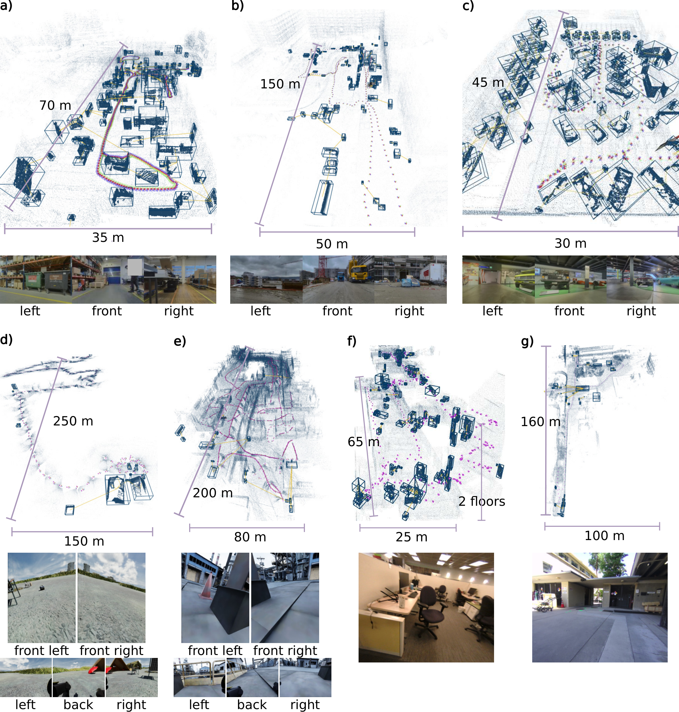
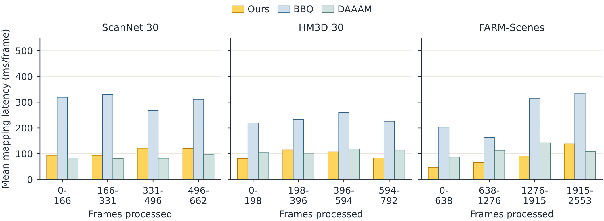
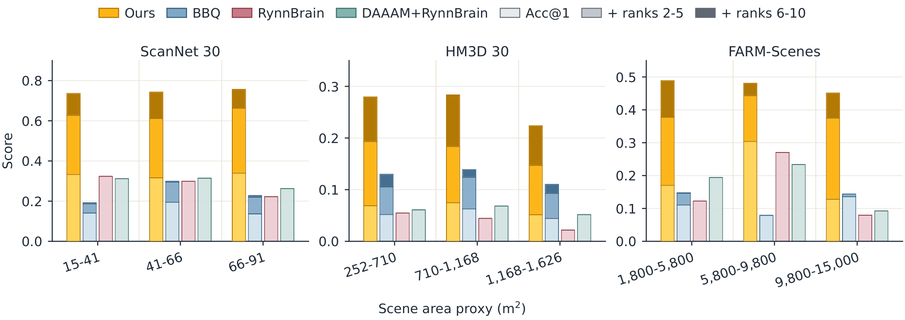
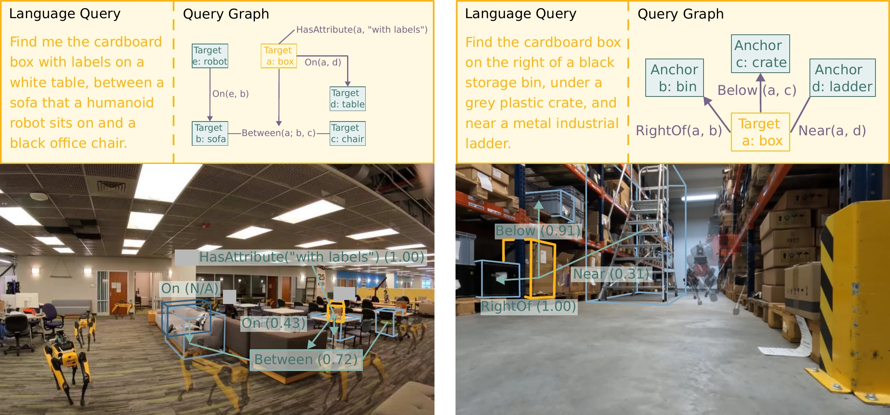
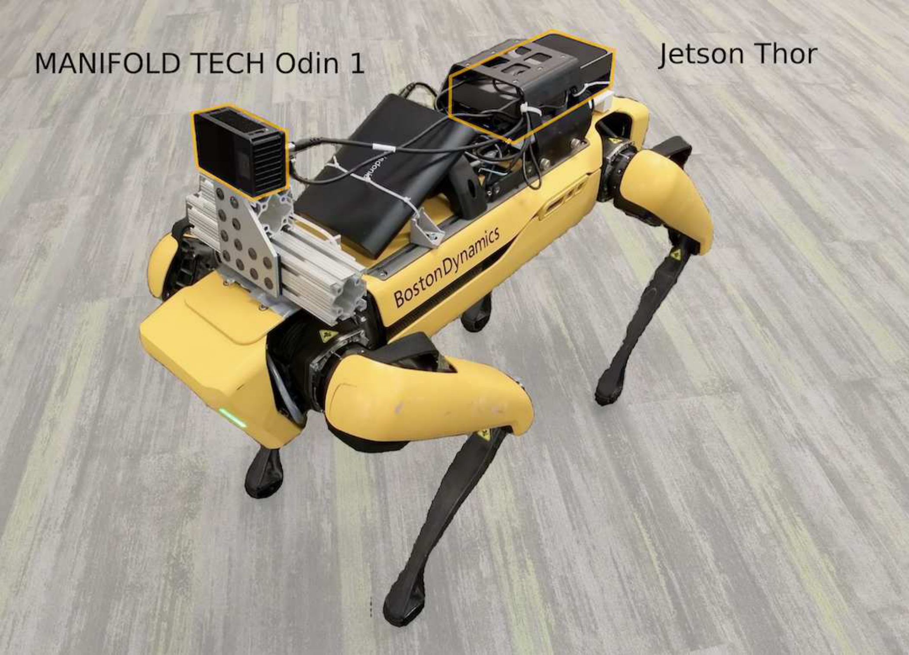
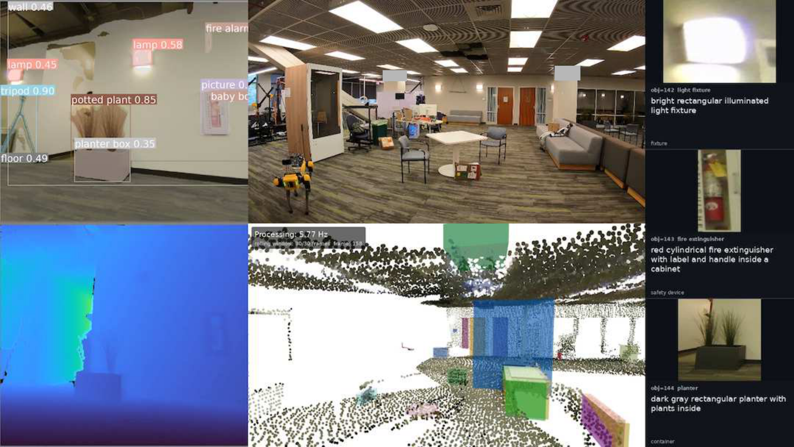
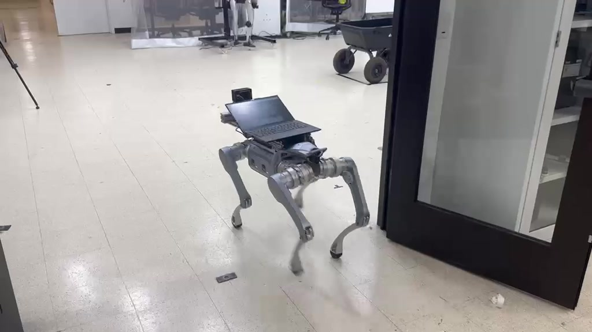
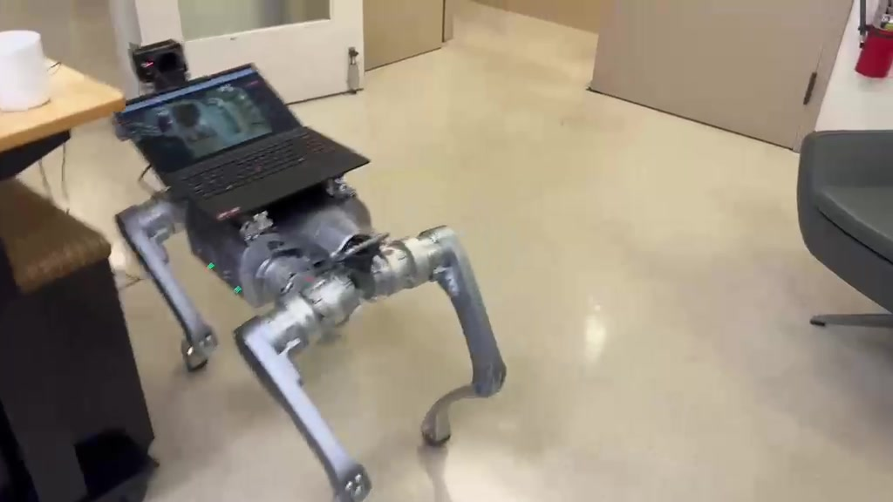

ANONYMOUS REVIEW
Find Anything using
Relational Spatial Memory
Watch the demonstrations, then explore the appendix.
Video demonstrations
Three short clips & the full videoThe video could not be loaded. Keep the assets folder alongside index.html.
Watch FARM build object memory across a large outdoor environment, then continue mapping in a warehouse.
WHERE TO LOOK
A short reading guide
Start with the clips for intuition. Choose a path below for the details you want to check.
ADDITIONAL DETAILS
Appendix
Read the complete appendix below. Use the contents to jump to a section, or your browser’s Find command to locate a term.
Overview
This appendix provides the retrieval formulation, implementation details, dataset annotation and acquisition protocols, full evaluation results, and robot experiments. Table A6 reports visible-mask retrieval accuracy, and Table A9 examines memory construction and retrieval components. The Unitree A2 study evaluates robustness across acquisition conditions; the Spot demonstration connects object retrieval to navigation.
I Retrieval Formulation and Inference
Query compilation
Table A1 summarizes the notation used in this formulation. A parser compiles into a typed specification , where is the target variable, are anchor variables, attaches to each target and anchor variable an open-vocabulary description (e.g. “tall lamp”, “white DBE delivery van”), and lists relational predicates over those variables. We write for the unary predicate that variable satisfies description , and each relation as , where is the predicate name, is the tuple of variables it relates, and denotes any additional argument or parameter. Equivalently, becomes a logical formula with one free variable, so the target is the only free variable and anchors exist only to constrain it through the predicates that mention them. Predicate names are selected from a fixed set of sixteen spatial and semantic relations (Near, On, Above, Below, NextTo, Between, Inside, InRegion, LeftOf, RightOf, InFrontOf, Behind, Closest, Farthest, HasAttribute, IsCategory), while predicate arguments – target descriptions, attribute strings, region phrases – remain open-vocabulary. For the example in Figure 1 of the main paper, has and .
Soft verification
The memory supplies the interpretation of the logical formula : each entity exposes feature functions (location, 3D extent, embeddings, captions, and views) read from its stored attributes . Against these, a description is scored as a soft unary match and a predicate as a soft relation where , is the soft score for predicate , and is the arity of . Thus, perception and language uncertainty enter as preferences rather than as hard filters. A binding assigns each variable a memory entity, and is verified by aggregating the unary and relational scores it induces, where applies the binding componentwise to the tuple , and combines the semantic and relational scores into a single soft constraint-satisfaction score. A candidate target is scored by its best witnessing binding, and retrieval returns the top-: This objective is approximated in FARM by greedy anchor binding, followed by the bounded semantic–geometric score and optional reranking described in Section III-B. An optional action interface maps the chosen entity to a navigable or viewing pose.
Query-time complexity
Exact binding cost depends on the query factor graph and candidate-set sizes. The following bounds characterize the query structure underlying the objective. A typical referring expression forms a star: one target connected to anchors by independent predicates . For a decomposable score, conditioning on separates the anchors, so exact binding on a star costs , where bound the target and per-anchor candidate counts – rather than the of exhaustive joint enumeration. Higher-arity predicates such as couple only the variables they mention; more generally, exact bucket elimination on a query factor graph of treewidth costs [1].
I-A Notation Reference for the Retrieval Formulation
The notation expresses retrieval as soft constraint satisfaction over memory entities: descriptions and relations specify the evidence used to rank each target candidate.
Notation used in the robust relational retrieval formulation.
| Symbol | Meaning |
|---|---|
| Natural-language referring query. | |
| Parsed query specification. | |
| Target variable: the object to retrieve. | |
| Anchor variables: contextual objects used to identify the target. | |
| Variable-to-description map, e.g., “tall lamp”. | |
| Set of relational predicates, e.g., . | |
| Unary description predicate: variable matches text description . | |
| Relation predicate with variables and optional argument . | |
| Logical form of the query, with as the only free variable. | |
| Binding from query variables to memory entities. | |
| Soft score for relation . | |
| Compatibility score of a complete binding. | |
| Best verification score when entity is fixed as the target. |
To read the formula for , interpret as “choose some anchor entities from memory,” as “satisfy all listed descriptions and relations jointly,” and as the only variable whose binding is returned as the answer. For example, in “the lamp below the dartboard and to the left of the poster,” the lamp is the target, while the dartboard and poster are anchors that help disambiguate it.
Unlike classical logic, these predicates are evaluated softly. A description match and a relation match produce scores in rather than binary truth values. Thus, measures how well one complete assignment of variables to memory entities satisfies the query, and keeps the best such assignment among all bindings that choose as the target.
II Relational Disambiguation Example
Consider the query “Find the tall lamp below the dartboard and to the left of the poster.” The parser assigns “tall lamp” to the target description and “dartboard” and “poster” to two anchor descriptions. These descriptions retrieve plausible entities independently, preserving the distinction between the object to return and the objects that identify it.
FARM then scores each candidate lamp using its semantic match and the requested Below and LeftOf relations to the bound anchors. The lamp’s height contributes through the target description; its position relative to the dartboard and poster contributes through the predicate scores. The bounded spatial factor refines the semantic ranking, and visual verification resolves the final ordering among the top candidates. The returned entity is the lamp, accompanied by the anchor bindings and stored viewpoint needed to interpret and act on the result.
III Detailed Method
III-A Memory Construction Details
Each entity carries a fixed-dimensional Gaussian, an adaptive voxel cloud capped at 1,000 keys, and at most 256 retained views. Voxel storage starts at a 5 mm base resolution and coarsens per object to satisfy the cap. These mechanisms bound retained geometric and visual evidence per entity without choosing a scene-wide voxel resolution. Appearance matching scales with detections and active entities; initial retrieval scores the active pool, and geometric relations are evaluated for query candidates.
GPU vectorization accelerates mask pooling from per-image DINO features, detection-to-entity feature comparisons, Hellinger gating, and scatter-add fusion. Union-find and cannot-link bookkeeping run on the CPU. Bounded, non-blocking queues decouple captioning and embedding from the synchronous loop. Desktop semantic models run on separate GPUs; all models share the Jetson Thor on the robot.
Memory design and computational cost.
| Principle | Mechanisms and benefit | Computational cost |
|---|---|---|
| Organize computation around entities and observations | Fixed-dimensional Gaussians, capped adaptive voxel clouds, bounded views, and query-time predicates avoid scene-wide spatial discretization and exhaustive relation construction. | Appearance matching costs for detections and entities; Gaussian fusion uses constant-size sufficient statistics. Voxel and view caps bound retained evidence per entity. |
| Vectorize mapping and decouple semantic enrichment | Batched GPU operations accelerate feature comparison and fusion; bounded queues keep model calls off the synchronous mapping path. | Mapping latency measures the synchronous update loop. Captioning and embedding run in background workers; semantic availability includes their execution and queueing time. |
The following details expand the synchronous per-frame loop and asynchronous enrichment introduced in Section III-B of the main paper.
Per-frame synchronous update
For each incoming RGB-D batch, the pipeline executes the following seven steps, followed by a periodic pruning pass.
Segmentation. An open-vocabulary detector [2] produces per-image masks together with classification-head features used as compact per-detection embeddings. Each detection is lifted into a 3D Gaussian over the masked depth points, with stored in a 6-vector packed form. An optional dense backbone [3] provides per-token features that are mean-pooled over the mask when richer visual descriptors are desired.
Filtering. A sequence of efficient filtering tests removes masks touching the image border, masks with too few foreground pixels, masks beyond the reliable depth range, detections labeled with uninformative open-vocabulary classes (e.g. walls and floors), and finally near-duplicate masks (IoU). The retained set is the input to association.
Neighbor search. For each surviving detection we first restrict candidates to active entities whose per-detection feature is sufficiently similar, then compute the Hellinger distance between the detection’s 3D Gaussian and each candidate entity’s Gaussian [4], retaining every candidate entity within a fixed Hellinger budget, sorted by distance. The feature/class prefilter is a single batched detection-by-entity similarity matrix, so the more expensive Gaussian comparison runs only on the resulting sparse candidate set rather than on all detection–entity pairs. The result is a sparse detection-to-entity match graph that feeds association; a detection retaining two or more entities is what later bridges previously separate entities.
Correspondence. A union-find pass over the match graph with path compression resolves the case where multiple detections claim the same entity, and the case where one detection bridges two previously separate entities. The pass only assigns winner/loser pointers; the actual entity-level merge—in which the loser’s covisibility, captions, and identity history are absorbed by the winner—is carried out during the subsequent fusion step.
Fusion. Matched detections update the entity’s running Gaussian by sufficient-statistics merge (, accumulated over detections), and update its appearance feature by a detection-count-weighted average. Entity-level merges flagged by the correspondence pass are also executed here, absorbing the loser’s covisibility, captions, view records, and identity history into the winner. Unmatched detections initialize new entities.
High-quality view selection. A new viewpoint is retained for an entity only if its viewing direction differs from all existing retained viewpoints by more than a fixed angular threshold, or if it is sufficiently closer than the closest existing viewpoint. Retained viewpoints are the inputs to the asynchronous caption stage.
Covisibility update. A bitset adjacency ( blocks) marks all pairs of entities that were jointly visible in the current batch; a parallel weighted edge dictionary accumulates their co-occurrence, restricted to spatially proximal pairs (a -nearest-neighbor graph in Gaussian Hellinger distance with a soft median cutoff) and discounted by a temporal decay. These structures record co-observation history; query-time relations are computed directly from entity attributes.
Asynchronous visual-language enrichment
The synchronous loop dispatches an enrichment task when an entity's selected views change. A background worker sends the crops to Qwen3.5-9B and obtains a structured caption. Qwen3-Embedding-0.6B embeds the caption, while SigLIP2 and Qwen3-VL-Embedding-2B embed the selected crop. The worker writes the caption and embeddings back to the entity. Bounded queues keep model calls off the synchronous update path; when a queue is full, incoming enrichment work is dropped. Semantic availability includes model execution and queueing time.
Why a single Gaussian per entity?
The Gaussian supplies a fixed-dimensional geometric summary for association, while the capped adaptive voxel cloud retains observed extent. Once a detection has been summarized, its first and second moments admit constant-size sufficient-statistics updates. Gaussian Hellinger distance supplies a unitless, bounded matching score, supporting reuse of the association threshold across the evaluated scales. Image processing, association, and voxel maintenance determine the remaining update cost.
Mechanisms and supporting experiments
FARM couples identity maintenance, evidence retention, and query-time scoring. Appearance and Gaussian geometry gate candidate associations; same-image exclusion prevents distinct co-observed detections from collapsing to one identity. The association-feature substitution compares DINO and YOLOE with the same multi-embedding retriever (ScanNet–5 A@1: 23.5% versus 17.6%). The common-text-retriever comparison measures the utility of the complete constructed memories.
Bounded voxel support preserves observed extent, and selected posed crops supply captioning, image retrieval, and directional predicates. Captions and embeddings are updated asynchronously as selected views change. The resource measurements report the cost of the integrated memory construction pipeline.
III-B Retrieval Details
This appendix expands the grounding pipeline summarized in Section III-C of the main paper. Each stage either narrows the candidate set or refines the score; the predicates named by the query – not the full inventory of relations – determine the work done at query time.
Query parsing. Qwen3.5-9B parses the query into a structured record holding a modifier-rich target description (e.g. “red chair”), a bare target-class noun (“chair”), and an ordered list of predicate invocations. Predicate names are drawn from a fixed vocabulary of sixteen spatial and semantic relations, Near, On, Above, Below, NextTo, Between, Inside, InRegion, LeftOf, RightOf, InFrontOf, Behind, Closest, Farthest, HasAttribute, IsCategory, while predicate arguments (target and landmark descriptions, attribute strings, region labels) are open-vocabulary natural-language phrases.
Region scoping. If the parsed query carries a region constraint and the scene provides region labels, the region phrase is embedded and matched against the stored labels (exact match, then cosine fallback), and entities outside the matched region are dropped from the candidate pool. This stage is skipped when the query has no region constraint or the scene has no region annotations.
Candidate retrieval. The candidate pool is the set of active entities – those flagged active in the scene state, carrying a caption and the per-object embeddings – within the scoped region. Rather than truncating to a top-, we rank the entire pool by reciprocal-rank fusion (each channel contributes with offset ) over four query channels spanning three embedding spaces: the caption-text embedding (Qwen3-Embedding-0.6B) queried with the modifier-rich target description () and again with the raw utterance (); the SigLIP2 image embedding queried with a short text-prompt ensemble (); and the Qwen3-VL image embedding queried with the target description (). The fused rank score is the entity’s target similarity ; landmark variables referenced by the predicates are retrieved analogously.
Predicate evaluation. Predicates are evaluated from entity geometry, stored views, and semantic attributes, returning soft membership scores in : Near uses a Gaussian on the inter-centroid distance ( m) and NextTo a wider Gaussian on the same distance ( m); Above/Below a sigmoid on the vertical offset; On a horizontal-distance gate times a vertical band; Inside/InRegion a containment test; Closest/Farthest a rank within the candidate set (); and the viewpoint-dependent LeftOf, RightOf, InFrontOf, Behind are evaluated in stored camera views of each target candidate – left/right from the anchor-relative horizontal offset of mask centroids on the image plane, front/behind from relative camera-frame depth. IsCategory uses a tiered class match (the entity’s YOLOE category when it matches, else a caption fallback), and HasAttribute matches the attribute string against the caption and stored attributes through embedding. Landmarks are bound greedily to their top-scoring candidates.
Composite scoring. For each target candidate we reduce its predicate scores to a geometric mean (sensitive to small terms before the bounded blend) and blend it with the target similarity as with , where is additionally scaled by a soft class factor (multiplied by when the candidate’s class does not match the parsed target class). The blend lets spatial predicates re-rank semantically plausible candidates – pulling an unsatisfied candidate down toward half its similarity – without letting a single noisy predicate veto a strong semantic match. This bounded blend combines semantic and relational evidence in the soft query objective.
Projected-view reranking. The top- candidates are reranked by Qwen3.5-9B over projected views: for each candidate we render a candidate-centered schematic panel of the local scene geometry, with the candidate marked in red, the competing top- objects in blue, and the estimated viewing “front” direction in green. The numbered panels, together with the parsed predicates and base scores, are presented to the model, which returns a per-candidate evidence score in ; candidates are reordered by these scores (using the VLM scores directly, with the model’s reasoning mode disabled). This projected-view reranking defines FARM; omitting it gives the FARM ablation.
Output. The system returns ranked candidate records – a target entity, its composite score, the per-predicate score breakdown, and the bound landmark entities. The action interface converts the top entity into a navigable or viewing pose from the entity’s geometry and high-quality views.
Robustness of soft scoring
Separating candidate generation from predicate scoring exposes two stages of retrieval performance. A candidate-recall failure occurs when the true target is poorly mapped or never enters the candidate set retrieved from its description. A relational-ranking failure occurs when the target is in the set but noisy anchors, predicates, or reranking fail to surface it in the top-. Soft scoring avoids hard deletion of candidate entities: with , where is the target similarity, is the geometric mean of predicate scores, and , the spatial factor stays in , so a wrong anchor or noisy predicate can at most halve a candidate’s semantic score but never deletes it. Hard-filtering requires every anchor constraint to pass, so an error in any one constraint can discard the target.
IV FARM-Scenes

FARM-Scenes. The seven FARM-Scenes cover diverse indoor and outdoor environments: (a) a warehouse [5], (b) an outdoor construction site [5], (c) an automotive museum [5], (d) a camping site, (e) an outdoor industrial facility, (f) a multi-floor office building, and (g) a school campus. For each scene, we show the reconstructed point cloud, annotated object instances and relational annotations, robot camera trajectory, approximate scene extent, and representative RGB views. These scenes vary substantially in scale, object density, distractor frequency, and sensor configuration. The large outdoor scenes test online memory construction and retrieval over long trajectories, while the object-rich indoor scenes stress relational retrieval in the presence of many visually or semantically similar distractors.
Overview
FARM-Scenes is a curated benchmark of seven large-scale indoor and outdoor environments for evaluating online 3D memory construction and relational object retrieval, as illustrated in Figure A1. The benchmark spans construction, museum, warehouse, camping, industrial, office, and campus environments, covering a broad range of spatial scales, object densities, camera configurations, and distractor patterns. We summarize the scene statistics in Table A3.
FARM-Scenes data card. For each scene, we report the environment type, setting, approximate area, approximate robot trajectory length, number of cameras, number of RGB-D frames, annotated object instances, and relational language queries.
| # | Type | Setting | Area (m) | Trajectory | Cameras | Frames | Annotated Objects | Queries |
|---|---|---|---|---|---|---|---|---|
| a) | warehouse | Indoor | 4,000 | 205 m | 3 | 2,553 | 163 | 250 |
| b) | construction site | Outdoor | 10,000 | 454 m | 3 | 1,122 | 147 | 145 |
| c) | automotive museum | Indoor | 1,800 | 160 m | 3 | 513 | 95 | 203 |
| d) | camping site | Outdoor | 7,500 | 683 m | 5 | 1,274 | 19 | 24 |
| e) | outdoor industrial facility | Outdoor | 15,000 | 1,267 m | 5 | 2,270 | 28 | 50 |
| f) | multi-floor office building | Indoor | 2,400 | 397 m | 1 | 352 | 147 | 228 |
| g) | school campus | Outdoor | 6,000 | 308 m | 1 | 210 | 46 | 55 |
Annotation procedure
We annotate objects using an interactive Viser-based interface [6]. For each object of interest, an annotator selects 2D masks in one or more RGB frames, assisted by SAM2 [7] mask propagation. Masks corresponding to the same physical object across frames are projected into 3D using camera poses and depth, and we extract the object’s 3D bounding box from the resulting point cloud. Given the annotated objects, annotators then label relations by selecting object pairs and assigning the most appropriate spatial relation between them. Relations are chosen to be useful for retrieval, so that they can help disambiguate a target object from nearby, visually similar, or semantically similar distractors. We use Gemini [8] to assist with captioning ground-truth objects; all captions are manually verified and refined.
Scene selection rationale
We choose the construction site, camping site, outdoor industrial facility, and school campus to evaluate online memory construction and retrieval in large-scale outdoor environments with long trajectories. We choose the automotive museum, warehouse, and multi-floor office building to stress-test relational retrieval in object-rich indoor scenes with many distractors, including repeated cars in the museum, boxes and storage items in the warehouse, and repetitive furniture and equipment in the office building. Together, these scenes test whether a system can maintain an object-level memory online and use relational constraints to retrieve specific objects in cluttered, repetitive, and large-scale environments.
V Evaluation Details and Extended Results
V-A Datasets
We evaluate on two complementary indoor referring-expression benchmarks: ReferIt3D (NR3D + SR3D+) on ScanNet, and IRef-VLA on HM3D. The ScanNet split emphasizes natural-language robustness: NR3D contains human-written descriptions, while SR3D+ contains synthetic relational descriptions over visually similar distractors. The HM3D split emphasizes scene scale: HM3D–30 averages 997 annotated instances per scene, compared with 80 on ScanNet–30 (about 12.5× more). FARM constructs 1,550 and 287 entities per scene, respectively (main-paper Table I). These counts distinguish evaluation annotations from the larger constructed object pool.
To evaluate representation scalability, we select the 30 most complex scenes from each benchmark, ranked by number of annotated objects for ScanNet and number of regions for HM3D. For each scene, we cap the number of evaluated utterances at 1000, using deterministic stratified sampling to preserve the natural query distribution within each scene. On ScanNet, we stratify by dataset (NR3D or SR3D+) and instance_type; on HM3D, we stratify by region_id and relation_type. Scenes with fewer than 1000 utterances contribute all available utterances. This gives 43,076 indoor utterances: 13,076 from ScanNet and 30,000 from HM3D.
We further introduce FARM-Scenes, a curated benchmark of seven large-scale indoor and outdoor environments captured with three platforms. FARM-Scenes complements the indoor benchmarks with outdoor distractors, long robot trajectories, and heterogeneous camera configurations. Together, ScanNet, HM3D, and FARM-Scenes form a 67-scene benchmark with 44,031 utterances, summarized in Table A4.
Evaluation queries by benchmark split. ScanNet and HM3D provide indoor referring expressions from ReferIt3D and IRef-VLA, respectively. FARM-Scenes adds large-scale indoor/outdoor queries collected across three capture platforms.
| Split | Query source | Scenes | Utterances |
|---|---|---|---|
| ScanNet | ReferIt3D (NR3D + SR3D+) | 30 | 13,076 |
| HM3D | IRef-VLA | 30 | 30,000 |
| FARM-Scenes | Curated (large-scale) | 7 | 955 |
| Total | 67 | 44,031 |
HM3D RGB-D trajectories
ScanNet provides posed RGB-D sequences directly. HM3D provides textured meshes, so we render a posed RGB-D trajectory for each scene using habitat-sim 0.2.5. For each annotated ground-truth object, we sample 24 candidate viewpoints within m of the object centroid on the scene navmesh, select the closest viewpoint without severe occlusion, group accepted viewpoints by navmesh island to cover multi-floor scenes, and order viewpoints within each island by a greedy nearest-unvisited tour. Consecutive viewpoints are connected by navmesh-constrained shortest paths computed with Habitat-Sim’s pathfinder [9], and the resulting polylines are sampled every 0.15 m to produce dense intermediate camera poses. Across the 30 HM3D scenes, this procedure gives 99% coverage of eligible annotated objects within 2 m of at least one rendered camera pose, where eligible annotated objects exclude uninformative categories such as walls and floors.
V-B Algorithms
We compare FARM against map-based, video-only, and keyframe/agent baselines that represent different design choices for relational object retrieval. BBQ evaluates an object-centric scene-graph pipeline with LLM-based relational reasoning. RynnBrain evaluates whether a video VLM can ground the target directly from trajectory frames without an explicit persistent map. DAAAM + RynnBrain tests whether stronger keyframe selection improves the video-only setting. DAAAM GPT-5-mini evaluates an agentic scene-understanding pipeline over a 4D graph; because of API cost and runtime, we evaluate it on FARM-Scenes and on 5-scene subsets of ScanNet and HM3D. The main paper additionally compares KeySG and Embodied-RAG across all three benchmark groups. KeySG supplies hierarchical retrieval. Embodied-RAG builds its semantic forest from FARM-predicted objects reconstructed from the RGB-D stream, so this comparison evaluates retrieval on shared object inputs; its original representation-construction pipeline is outside the evaluated configuration. Their A@1/R@5/R@10/MRR results are reported in main-paper Table II(a); resource measurements for these two methods are unavailable.
FARM and FARM. Our online relational spatial memory (Section III-B of the main paper) is built from streaming posed RGB-D and queried by the structured relational retrieval pipeline in Section III-C of the main paper. Reconstruction uses an open-vocabulary YOLOE detector, an asynchronous Qwen3.5-9B captioner, Qwen3 text embeddings, and SigLIP2/Qwen3-VL image embeddings. We report two variants that share the same memory and candidate retrieval but differ in the final ranking step. FARM parses each utterance with Qwen3.5-9B into typed predicates, retrieves candidates by fusing text, caption, and visual embeddings, and ranks them with our soft predicate evaluator; it does not invoke a VLM at ranking time. FARM adds a projected-view Qwen3.5-9B reranker over the top-5 candidates. Since this reranker only permutes the top-5 candidates, FARM and FARM have identical R@5 and R@10 and differ only in Acc@1 and MRR. The same grounding configuration is used across ScanNet and HM3D.
BBQ . BBQ builds an open-vocabulary object-centric scene graph using MobileSAM masks, DINOv2 cross-view association, and a two-stage LLM grounding procedure for target/anchor selection and relation reasoning. To remove captioner quality as a confound, we replace BBQ’s original captioner with the same Qwen3.5-9B captioner used by FARM; all other components follow the upstream BBQ pipeline.
RynnBrain . RynnBrain-30B is a 30B-A3B MoE video VLM. Following its interleaved-frame protocol, the model ingests sub-sampled trajectory frames and directly emits one 3D AABB per utterance, without constructing a persistent map. To fit within the context length, we downsample trajectories to 2 frames per second. For mask-IoU evaluation, we convert its 2D box output to a segmentation mask using the same SAM2 mask-conversion code used for all methods.
DAAAM + RynnBrain [10]. We use DAAAM as a frame-selection module. For each scene, DAAAM solves its set-cover/view-quality program and selects keyframes that cover observed fragments. These keyframes are then provided to RynnBrain as an image-based memory.
DAAAM GPT-5-mini [10]. We evaluate DAAAM’s
SceneUnderstandingAgent, an OpenAI Responses-API agent over a 4D graph, usinggpt-5-mini[11] through OpenRouter withmax_iterations.
Methods share the captioner and SAM2 mask conversion where applicable. In the primary visible-mask evaluation, DAAAM+R scores 11,148 of 13,076 ScanNet queries, 26,375 of 30,000 HM3D queries, and all 955 FARM-Scenes queries; incomplete pipelines are excluded from its denominator. API cost and runtime restrict DAAAM+G to 312 ScanNet–5 and 500 HM3D–5 queries, compared with FARM’s 887 and 5,000, respectively. Both methods score all 955 FARM-Scenes queries. Thus, the indoor dagger rows share scene groups but use different query cohorts; they provide subset-level context rather than a paired comparison on identical queries. Tables report the scored-query counts for each overlap protocol. Hardware and timing definitions accompany the resource measurements.
V-C DAAAM Reconstruction Configuration
DAAAM reconstruction uses dataset-specific depth caps and Hydra/Khronos configurations (Table A5). ScanNet and HM3D use the stock indoor clio_dataset_khronos.yaml configuration. FARM-Scenes uses coda_dataset_khronos_maxrange50.yaml, derived from DAAAM’s stock outdoor coda_dataset_khronos.yaml. Relative to that outdoor default, only the map-window radius and object-detector maximum range are changed, both from 20 to 50 m. The remaining indoor/outdoor differences in the table come from the stock configurations. In particular, the TSDF voxel size changes from 0.1 to 0.2 m, while the object-detector grid size stays at 0.1 m.
DAAAM reconstruction settings. Indoor and outdoor configurations used for ScanNet/HM3D and FARM-Scenes. Depth cap is the reconstruction input limit; detector range and map-window radius are separate settings. Outdoor configuration differences are inherited defaults except for the two range extensions described in the text.
| Parameter | ScanNet / HM3D (indoor) | FARM-Scenes (outdoor, extended range) |
|---|---|---|
| Input depth cap (m) | 5 / 8 | 50 |
| Map-window maximum radius (m) | 8 | 50 |
| TSDF voxel size (m) | 0.1 | 0.2 |
| TSDF truncation distance (m) | 0.3 | 0.6 |
| Object-detector maximum range (m) | 4 | 50 |
| Object-detector grid size (m) | 0.1 | 0.1 |
| Maximum extracted object volume (m) | 10 | 50 |
| Traversability minimum place width | 0.1 | 0.4 |
| Freespace places (GVD block) | Present | Absent |
| Backend node merging | Disabled | Enabled; NearestNode proposer, embedding merge threshold 0.5 |
| Backend places functor | UpdatePlacesFunctor |
None |
We use the outdoor configuration for FARM-Scenes to support long-range reconstruction. Its larger map window and detector range accommodate the longer trajectories and greater object distances in these scenes.
The DAAAM+G evaluation uses a configured input rate of 30 fps on all three dataset groups. Processing latency is measured separately. Shared settings are depth scale 1000, FastSAM-x, re-identification disabled, DAM minimum masks 8, minimum observations per track 3, DAM batch size 128, query interval 1, sentence-t5-large, and the GPT-5-mini agent.
V-D Evaluation Metrics
We report four families of metrics, evaluated consistently across methods.
Grounding accuracy. For each utterance, a method returns either a ranked list of object candidates or, for RynnBrain-style methods, a single predicted AABB. For ranked methods, we report , , , and over the top-10 candidates. RynnBrain and DAAAM+R return one answer per query, so we compare them only using Acc@1; their ranking metrics are left unreported (dashes). We do not expand their single outputs into ranked candidate lists. measures whether the top-ranked prediction is correct, measures whether any of the top- predictions is correct, and is the mean reciprocal rank of the first correct prediction: where is the rank of the first correct candidate for query , and the contribution is zero if no correct candidate appears in the top 10. We evaluate correctness using three overlap criteria: (i) visible-mask IoU, where the ground-truth object is projected into the selected image plane with occlusion handling; (ii) 2D box IoU, included for compatibility with box-prediction baselines such as RynnBrain; and (iii) 3D AABB IoU, included for compatibility with graph baselines such as BBQ. For each criterion, we report thresholds .
Representation size. For graph-based methods, we report the on-disk size of the saved persistent scene-graph artifact in MiB. For RynnBrain, which does not persist an explicit map, we instead report the estimated bf16 visual-token-cache size for the keyframes actually ingested by the grounding model, as a representative memory footprint for a no-explicit-map baseline.
Mapping latency. For graph-based methods, we report wall-clock time per ingested RGB-D frame, averaged over the full trajectory. For RynnBrain-style methods, we report latency over the frames effectively consumed by the grounding head.
Query latency. We report wall-clock time per utterance, measured end-to-end from the query string to a ranked candidate list, or to a single AABB for RynnBrain-style methods.
V-E Latency and Accuracy vs. Scene Scale


Scaling analysis of online memory construction and grounding performance. Top: per-frame mapping latency as a function of frames processed. Bottom: grounding accuracy as scene area increases.
Figure A2 reports memory construction latency and grounding accuracy across scene scales. DAAAM uses the dataset-specific reconstruction configurations in Section V-C; FARM uses a fixed mapping configuration. Mapping latency remains approximately stable across the tested trajectory lengths. Grounding accuracy decreases with scene area, as observation coverage and instance selection become more challenging. Each bin aggregates scenes with different object densities and acquisition conditions.
V-F Grounding Accuracy
Table A6 reports the main visible-mask IoU evaluation across ScanNet, HM3D, and FARM-Scenes. Bold marks the highest value within each dataset, threshold, and evaluation block; the scored-query column specifies each method’s evaluation cohort. On ScanNet 30, FARM reaches Acc@1 of .3591, .2800, and .1304 at IoU thresholds .10, .25, and .50, respectively. This consistently improves over BBQ and RynnBrain, and the gap becomes especially large at stricter thresholds: at , FARM obtains .1304 Acc@1 compared with .0136 for RynnBrain and .0025 for BBQ. The advantage at stricter thresholds demonstrates improved correspondence between the selected objects and the target extent.
On HM3D–30, FARM achieves the best Acc@1 at all thresholds, with .0788, .0606, and .0289 at , respectively. It also substantially improves top- retrieval: at , FARM reaches .2694 R@10, compared with .1282 for BBQ. The recall gain shows that FARM makes more target objects accessible to downstream selection in large multi-room environments. Absolute HM3D accuracy remains low. The 997 annotated instances and 1,550 FARM entities per scene in main-paper Table I place these scores in the context of a much larger object pool than ScanNet’s 80 annotations and 287 FARM entities. Observation coverage, memory construction, candidate retrieval, and spatial overlap also contribute to the difficulty.
On FARM-Scenes, FARM also performs best across all thresholds. At , it achieves .2419 Acc@1 and .4733 R@10, outperforming BBQ, RynnBrain, DAAAM + RynnBrain, and DAAAM GPT-5-mini. At and , FARM remains the strongest method, with .1644 and .0754 Acc@1, respectively. These results extend the comparison to the curated relational queries in larger and more heterogeneous environments.
Robustness to evaluation protocol
Table A7 and Table A8 evaluate whether the same conclusion holds under alternative overlap definitions. Under 2D box IoU, FARM is best on ScanNet at all thresholds and best on HM3D for all top- and MRR metrics. DAAAM + RynnBrain leads HM3D Acc@1 at , with a slightly higher score (.0765 vs. .0705), while FARM leads Acc@1 at stricter thresholds. Rank-based comparisons exclude DAAAM + RynnBrain because it returns a single answer. Under 3D AABB IoU, FARM also outperforms BBQ on both ScanNet and HM3D in mean IoU and in every reported retrieval metric. These results show that the retrieval gains extend across mask, image-box, and 3D-box overlap criteria.
Grounding accuracy under visible-mask IoU. We evaluate each method at IoU thresholds on ScanNet, HM3D, and FARM-Scenes. ScanNet and HM3D use occlusion-aware visible-mask IoU; FARM-Scenes uses the same 2D mask-IoU protocol on selected evaluation views. denotes GPT-5-mini.
| Dataset | Method | ||||||
|---|---|---|---|---|---|---|---|
| ScanNet 30 | FARM | 13,076 | 0.10 | .3591 | .6352 | .7456 | .4794 |
| RynnBrain-30B | 13,076 | 0.10 | .2797 | – | – | – | |
| BBQ | 13,076 | 0.10 | .1542 | .2284 | .2349 | .1869 | |
| DAAAM + RynnBrain | 11,148 | 0.10 | .2929 | – | – | – | |
| FARM | 13,076 | 0.25 | .2800 | .5138 | .6136 | .3825 | |
| RynnBrain-30B | 13,076 | 0.25 | .1395 | – | – | – | |
| BBQ | 13,076 | 0.25 | .0610 | .0915 | .0938 | .0749 | |
| DAAAM + RynnBrain | 11,148 | 0.25 | .1323 | – | – | – | |
| FARM | 13,076 | 0.50 | .1304 | .2789 | .3437 | .1973 | |
| RynnBrain-30B | 13,076 | 0.50 | .0136 | – | – | – | |
| BBQ | 13,076 | 0.50 | .0025 | .0041 | .0041 | .0033 | |
| DAAAM + RynnBrain | 11,148 | 0.50 | .0125 | – | – | – | |
| HM3D 30 | FARM | 30,000 | 0.10 | .0788 | .1816 | .2694 | .1254 |
| RynnBrain-30B | 30,000 | 0.10 | .0458 | – | – | – | |
| BBQ | 30,000 | 0.10 | .0529 | .1073 | .1282 | .0758 | |
| DAAAM + RynnBrain | 26,375 | 0.10 | .0610 | – | – | – | |
| FARM | 30,000 | 0.25 | .0606 | .1422 | .2137 | .0978 | |
| RynnBrain-30B | 30,000 | 0.25 | .0325 | – | – | – | |
| BBQ | 30,000 | 0.25 | .0373 | .0789 | .0966 | .0548 | |
| DAAAM + RynnBrain | 26,375 | 0.25 | .0443 | – | – | – | |
| FARM | 30,000 | 0.50 | .0289 | .0747 | .1163 | .0500 | |
| RynnBrain-30B | 30,000 | 0.50 | .0138 | – | – | – | |
| BBQ | 30,000 | 0.50 | .0199 | .0419 | .0532 | .0293 | |
| DAAAM + RynnBrain | 26,375 | 0.50 | .0188 | – | – | – | |
| FARM-Scenes 7 | FARM | 955 | 0.10 | .2419 | .3749 | .4733 | .3046 |
| RynnBrain-30B | 955 | 0.10 | .0272 | – | – | – | |
| BBQ | 955 | 0.10 | .0743 | .0953 | .0963 | .0829 | |
| DAAAM + RynnBrain | 955 | 0.10 | .1508 | – | – | – | |
| DAAAM + G | 955 | 0.10 | .0560 | .1520 | .2120 | .1000 | |
| FARM | 955 | 0.25 | .1644 | .2681 | .3393 | .2111 | |
| RynnBrain-30B | 955 | 0.25 | .0209 | – | – | – | |
| BBQ | 955 | 0.25 | .0513 | .0649 | .0660 | .0565 | |
| DAAAM + RynnBrain | 955 | 0.25 | .1005 | – | – | – | |
| DAAAM + G | 955 | 0.25 | .0294 | .0796 | .1090 | .0561 | |
| FARM | 955 | 0.50 | .0754 | .1246 | .1665 | .0985 | |
| RynnBrain-30B | 955 | 0.50 | .0094 | – | – | – | |
| BBQ | 955 | 0.50 | .0293 | .0356 | .0356 | .0320 | |
| DAAAM + RynnBrain | 955 | 0.50 | .0524 | – | – | – | |
| DAAAM + G | 955 | 0.50 | .0294 | .0754 | .1026 | .0554 | |
| ScanNet 5 | FARM | 887 | 0.10 | .4059 | .6967 | .7621 | .5310 |
| DAAAM + G | 312 | 0.10 | .2630 | .4780 | .5900 | .3710 | |
| FARM | 887 | 0.25 | .3112 | .5411 | .6212 | .4135 | |
| DAAAM + G | 312 | 0.25 | .2564 | .4679 | .5705 | .3466 | |
| FARM | 887 | 0.50 | .1218 | .3416 | .3641 | .2150 | |
| DAAAM + G | 312 | 0.50 | .2083 | .4327 | .5417 | .3015 | |
| HM3D 5 | FARM | 5,000 | 0.10 | .0792 | .1606 | .2424 | .1169 |
| DAAAM + G | 500 | 0.10 | .0420 | .0940 | .1240 | .0670 | |
| FARM | 5,000 | 0.25 | .0586 | .1196 | .1880 | .0876 | |
| DAAAM + G | 500 | 0.25 | .0400 | .0860 | .1140 | .0622 | |
| FARM | 5,000 | 0.50 | .0252 | .0590 | .0990 | .0417 | |
| DAAAM + G | 500 | 0.50 | .0300 | .0700 | .0900 | .0483 |
Grounding accuracy under 2D box IoU. We evaluate predictions using at thresholds . This protocol provides a box-based comparison with methods that directly output bounding boxes. Results are reported on ScanNet 30 and HM3D 30; DAAAM + RynnBrain is evaluated on the subset of scenes for which its pipeline completed successfully.
| Dataset | Method | ||||||
|---|---|---|---|---|---|---|---|
| ScanNet 30 | FARM | 6,401 | 0.10 | .3376 | .6533 | .7632 | .4706 |
| RynnBrain-30B | 8,128 | 0.10 | .2239 | – | – | – | |
| BBQ | 6,056 | 0.10 | .1558 | .2248 | .2273 | .1851 | |
| DAAAM + RynnBrain | 7,070 | 0.10 | .2348 | – | – | – | |
| FARM | 6,401 | 0.25 | .2371 | .4644 | .5587 | .3343 | |
| RynnBrain-30B | 8,128 | 0.25 | .0335 | – | – | – | |
| BBQ | 6,056 | 0.25 | .0421 | .0595 | .0624 | .0500 | |
| DAAAM + RynnBrain | 7,070 | 0.25 | .0344 | – | – | – | |
| FARM | 6,401 | 0.50 | .0767 | .1984 | .2404 | .1263 | |
| RynnBrain-30B | 8,128 | 0.50 | .0019 | – | – | – | |
| BBQ | 6,056 | 0.50 | .0023 | .0041 | .0041 | .0031 | |
| DAAAM + RynnBrain | 7,070 | 0.50 | .0023 | – | – | – | |
| HM3D 30 | FARM | 4,818 | 0.10 | .0705 | .1899 | .2824 | .1235 |
| RynnBrain-30B | 4,385 | 0.10 | .0559 | – | – | – | |
| BBQ | 4,126 | 0.10 | .0616 | .1196 | .1414 | .0862 | |
| DAAAM + RynnBrain | 5,087 | 0.10 | .0765 | – | – | – | |
| FARM | 4,818 | 0.25 | .0550 | .1541 | .2286 | .0988 | |
| RynnBrain-30B | 4,385 | 0.25 | .0421 | – | – | – | |
| BBQ | 4,126 | 0.25 | .0438 | .0885 | .1070 | .0627 | |
| DAAAM + RynnBrain | 5,087 | 0.25 | .0543 | – | – | – | |
| FARM | 4,818 | 0.50 | .0273 | .0879 | .1381 | .0545 | |
| RynnBrain-30B | 4,385 | 0.50 | .0163 | – | – | – | |
| BBQ | 4,126 | 0.50 | .0242 | .0511 | .0645 | .0356 | |
| DAAAM + RynnBrain | 5,087 | 0.50 | .0208 | – | – | – |
Grounding accuracy under 3D AABB IoU. We compare graph-based methods using 3D axis-aligned bounding-box overlap at thresholds . Mean IoU is computed over top-1 predictions. Results are reported on ScanNet–30 and HM3D–30.
| Dataset | Method | Mean IoU | |||||
|---|---|---|---|---|---|---|---|
| ScanNet 30 | FARM | .1128 | 0.10 | .2944 | .5995 | .7061 | .4275 |
| BBQ | .0969 | 0.10 | .2271 | .3536 | .3585 | .2807 | |
| FARM | .1128 | 0.25 | .2010 | .4686 | .5743 | .3216 | |
| BBQ | .0969 | 0.25 | .1578 | .2502 | .2589 | .1978 | |
| FARM | .1128 | 0.50 | .0779 | .2112 | .2668 | .1360 | |
| BBQ | .0969 | 0.50 | .0769 | .1306 | .1367 | .1007 | |
| HM3D 30 | FARM | .0148 | 0.10 | .0402 | .1183 | .1793 | .0849 |
| BBQ | .0129 | 0.10 | .0305 | .0648 | .0794 | .0456 | |
| FARM | .0148 | 0.25 | .0233 | .0731 | .1140 | .0529 | |
| BBQ | .0129 | 0.25 | .0193 | .0412 | .0524 | .0290 | |
| FARM | .0148 | 0.50 | .0094 | .0296 | .0452 | .0216 | |
| BBQ | .0129 | 0.50 | .0091 | .0205 | .0279 | .0143 |
V-G Component Comparisons
Panel (a) evaluates retrieval stages on fixed FARM memory using visible-mask IoU ≥0.1. Panel (b) compares memory backends, retrieval embeddings, and association features. Panel (c) compares retrieval mechanisms and rerankers with FARM memory fixed. Columns report ScanNet–5, HM3D–5, and FARM-Scenes; — indicates no reported result. Methods and components: BBQ [12], DAAAM [10]; association backends DINO [3], Hydra+DAM [13, 14], YOLOE [2]; retrieval embeddings Qwen3-T [15], SigLIP2 [16], Qwen3-VL [17], T5 [18].
(a) Retrieval stages on fixed FARM memory
| Component/configuration | ScanNet–5 | HM3D–5 | FARM-Scenes |
|---|---|---|---|
| Whole-utterance embedding | 28.2 / 67.4 | 2.2 / 8.8 | 9.3 / 33.6 |
| Target-object embedding | 38.7 / 73.6 | 5.9 / 22.1 | 15.9 / 45.7 |
| + geometric predicates | 41.6 / 76.2 | 6.7 / 24.2 | 16.3 / 47.3 |
| + VLM reranking | 40.6 / 76.2 | 7.9 / 24.2 | 24.2 / 47.3 |
(b) Scene representation
| Method | Merge | Retr. emb. | A@1 / R@10 | ||
| ScanNet–5 | HM3D–5 | FARM-Scenes | |||
| BBQ | DINO | Qwen3-T | 5.4 / 17.2 | 2.3 / 10.3 | 5.9 / 15.3 |
| DAAAM | Hydra+DAM | Qwen3-T | 18.6 / 51.0 | 2.6 / 12.2 | 5.0 / 17.4 |
| FARM | DINO | Qwen3-T | 23.0 / 58.8 | 3.6 / 16.0 | 9.8 / 28.8 |
| FARM | DINO | SigLIP2 | 7.4 / 30.9 | 0.3 / 1.7 | 0.9 / 3.5 |
| FARM | DINO | Qwen3-VL | 14.7 / 41.2 | 1.7 / 12.4 | 2.7 / 12.2 |
| FARM | DINO | T5 | 22.1 / 59.8 | 3.3 / 15.6 | 10.6 / 28.6 |
| FARM | DINO | Qwen3-T | 23.0 / 58.8 | 3.6 / 16.0 | 9.8 / 28.8 |
| FARM | DINO | multi | 23.5 / 55.4 | 4.1 / 14.8 | 8.7 / 27.4 |
| FARM | YOLOE | multi | 17.6 / 54.4 | 4.1 / 16.1 | 9.0 / 29.0 |
| FARM | DINO | multi | 23.5 / 55.4 | 4.1 / 14.8 | 8.7 / 27.4 |
(c) Retrieval and reranking
| Retrieval | Rerank | A@1 / R@10 | ||
| ScanNet–5 | HM3D–5 | FARM-Scenes | ||
| Retrieval mechanism ablation without reranking. | ||||
| Target embedding | None | 38.7 / 73.6 | 5.9 / 22.1 | 15.9 / 45.7 |
| BBQ-style | None | 14.5 / 58.9 | 5.3 / 22.5 | — |
| BBQ-style + multi | None | 31.5 / 71.7 | 5.8 / 22.4 | — |
| FARM | None | 41.6 / 76.2 | 6.7 / 24.2 | 16.3 / 47.3 |
| Reranking ablation with fixed FARM retrieval. | ||||
| FARM | None | 41.6 / 76.2 | 6.7 / 24.2 | 16.3 / 47.3 |
| FARM | Qwen@5 | 40.6 / 76.2 | 7.9 / 24.2 | 24.2 / 47.3 |
| FARM | RynnBrain@10 | 31.6 / 76.2 | 8.4 / 24.2 | — |
Panel (a) reports the effect of target extraction, geometric predicates, and Qwen3.5-9B reranking. Panel (b) fixes Qwen3-text retrieval for the memory comparison, then varies embedding channels and association features within FARM. Panel (c) compares target embedding, BBQ-style retrieval, and FARM structured retrieval without reranking, followed by Qwen3.5-9B and RynnBrain reranking of fixed FARM candidates. The comparison separates the contributions of retrieval and final visual selection.
V-H Association Features
With the same multi-embedding retriever, DINO association features yield 23.5% A@1 and 55.4% R@10 on ScanNet–5, compared with 17.6% and 54.4% for YOLOE features (Table A9). On HM3D–5, both yield 4.1% A@1, while YOLOE yields higher R@10 (16.1% versus 14.8%). On FARM-Scenes, YOLOE yields 9.0% A@1 and 29.0% R@10, compared with 8.7% and 27.4% for DINO. Both feature choices support the same association framework, with their relative accuracy varying across datasets.
V-I Retrieval-Stage Analysis
Retrieval-stage coverage. Targets are tracked through the top-100 diagnostic candidate set, spatial top ten, and final answer under visible-mask IoU ≥0.1. The first three rows use all queries; conditional rates divide successive aggregate stage rates.
| Stage/rate (%) | ScanNet–30 | HM3D–30 | FARM-Scenes |
|---|---|---|---|
| Target in diagnostic candidate set | 82.0 | 45.3 | 53.6 |
| Target in spatial top ten | 74.6 | 26.9 | 47.3 |
| Final top-1 correct | 35.9 | 7.9 | 24.2 |
| Top-ten retention given candidate inclusion | 91.0 | 59.4 | 88.2 |
| Top-1 correct given top-ten inclusion | 48.1 | 29.4 | 51.2 |
Table A10 traces targets through the diagnostic candidate set, spatial top ten, and final selection. On ScanNet, candidate recall is 82.0%, and the spatial top ten retains 91.0% of these targets. Final A@1 is 35.9%, leaving a 38.7-point gap between top-ten recall and top-one accuracy. This identifies candidate-specific verification as a clear opportunity for further gains.
On HM3D, candidate recall is 45.3%, placing 54.7% of queries outside the reach of subsequent spatial scoring. Candidate inclusion depends jointly on observation coverage, memory construction, semantic descriptions, and coarse retrieval. Improving these stages complements more accurate relational selection.
On FARM-Scenes, candidate recall is 53.6%, and the spatial top ten retains 88.2% of these targets, yielding 47.3% R@10. Final A@1 reaches 24.2%. These results support the complementary roles of memory coverage, spatial scoring, and visual verification in heterogeneous environments.
V-J Additional Relational Retrieval Examples

Relational target and anchor examples from indoor and warehouse scenes. The queries use spatial relations and anchor attributes to distinguish similar target instances.
V-K Spot Demonstration: Acquisition, Replay, and Navigation
We demonstrate onboard object retrieval and navigation with a Boston Dynamics Spot quadruped. A teleoperated sensor recording is replayed through FARM's streaming mapping node on Jetson Thor to construct memory. After mapping, Spot grounds relational language queries in that memory and navigates to the retrieved objects' stored viewpoints.

Real-robot platform. Boston Dynamics Spot with a Manifold Tech Odin 1 perception unit (RGB-D and LiDAR visual-inertial odometry) and an onboard NVIDIA Jetson Thor running FARM.
Robot platform and sensing
We use a Boston Dynamics Spot quadruped, equipped with a Manifold Tech Odin 1 perception unit and an NVIDIA Jetson Thor onboard computer (Figure A4). The Odin 1 is a self-contained sensor that provides RGB, metric depth, and a built-in LiDAR visual-inertial odometry pose stream, removing the need for an external SLAM stack at mapping time. An adapter node converts the raw topics into posed RGB-D frames for FARM to ingest into the online memory-construction node.
Onboard compute and deployment
All perception and memory construction run on the Jetson Thor, an aarch64 platform with a Blackwell-class GPU and 128 GB of unified CPU–GPU memory: the segmentation and embedding models run in-process, and the Qwen3.5-9B captioner and Qwen3 embedding model are served by a local vLLM server on the same device [19, 17, 15, 20]. We build on an existing ROS 2 base stack that provides the Spot driver and the Odin 1 sensor driver; FARM runs as a separate process alongside it on a shared DDS domain, communicating through ROS 2 topics. Memory construction runs at approximately 5–10 Hz on Jetson Thor. The mapping node always processes the newest available frame and drops any stale frames that arrive while it is busy, enabling it to keep up with real-time operation.

Onboard scene-graph construction. A snapshot of FARM building its object-level memory on the robot from the Stage-1 log. Left: an RGB frame with open-vocabulary detections and its aligned metric depth. Middle: the mapped environment and the accumulated 3D point clouds with per-object bounding boxes. Right: example object-memory entries, each with a category, a crop, and the VLM caption used for retrieval.
Stage 1: memory construction from a teleoperation log
In the first stage, an operator manually teleoperates Spot and the onboard Odin 1 unit through the environment, recording the raw sensor streams to a rosbag. The bag is later replayed on the Jetson Thor through the same online mapping node used for live operation, which incrementally constructs the object-level memory of Section III-A and persists it as a scene state. The saved scene state also records the mapping-time camera poses, which Stage 2 reuses to construct a navigation graph.
Stage 2: language-conditioned object-goal navigation
In the second stage the robot operates autonomously over the constructed scene memory, given spatial-relational object-query strings. Each query is grounded against the onboard memory by the retrieval pipeline of Section III-B, returning the top-ranked object and a saved viewpoint from which it was observed during mapping. Everything runs on the robot’s Jetson Thor, including the onboard vLLM server that hosts the language models used for parsing and embedding.
Navigation uses the recorded Stage-1 waypoints as a graph. The retrieved object's saved viewpoint defines the goal; Dijkstra's algorithm finds a shortest path through the graph, and Spot's trajectory controller executes the resulting waypoints.
Qualitative demonstration
Table A11 lists the eight queries in the qualitative demonstration. Several share the target category “cardboard package” and use different anchors to distinguish instances. Two queries fail; subsequent queries add attributes to the target or anchor description and succeed. The supplementary video shows the retrieval and navigation sequence.
Real-robot demonstration queries. Queries and observed outcomes in the onboard retrieval-and-navigation demonstration. Repeated target categories require relational or attribute-based disambiguation. Follow-up queries refine target or anchor descriptions.
| Query | Relation | Outcome |
|---|---|---|
| “door to the right of the sofa” | RightOf | ✓ |
| “cardboard package in front of the trash can” | InFrontOf | ✓ |
| “cardboard package under a table” | Below | ✗ |
| “cardboard package under a white table” | Below | ✓ |
| “cardboard package next to a humanoid robot” | NextTo | ✓ |
| “chair between a white table and a robot” | Between | ✗ |
| “gray fabric chair between a white table and a robot” | Between | ✓ |
| “purple office chair closest to a package” | Closest | ✓ |
V-L Robustness to Acquisition Conditions on Unitree A2

Robot platform

Mounted equipment
Indoor acquisition
The Unitree A2 study evaluates retrieval robustness as acquisition conditions change. We deliberately keep the target objects and 22 queries fixed across five acquisitions of the same approximately 770 m floor while varying sensor height, route, and speed. Acquisition and query authoring are performed independently. Camera height ranges from 0.5 to 0.7 m, route length from 150 to 192 m, and 95th-percentile speed from 0.79 to 2.36 m/s. SLAM-estimated return-to-start displacement ranges from 7.0 to 25.3 cm. A@1 is 55.5±7.4% and R@10 is 84.6±5.2%, reported as mean ± standard deviation of the five run-level accuracies.
Variation across runs summarizes the joint effect of camera height, route, and speed.
On Jetson Thor, captioning processes approximately 20 objects/s, and newly observed objects are typically queryable within 5 s. This semantic-availability interval includes asynchronous captioning and embedding, while mapping throughput measures the synchronous update loop.
References
K. Kask, R. Dechter, J. Larrosa, and A. Dechter, “Unifying tree decompositions for reasoning in graphical models,” Artificial Intelligence, vol. 166, no. 1, pp. 165–193, 2005.
A. Wang, L. Liu, H. Chen, Z. Lin, J. Han, and G. Ding, “Yoloe: Real-time seeing anything,” in Proceedings of the IEEE/CVF International Conference on Computer Vision (ICCV), October 2025, pp. 24 591–24 602.
O. Siméoni, H. V. Vo, M. Seitzer, F. Baldassarre, M. Oquab, C. Jose, V. Khalidov, M. Szafraniec, S. Yi, M. Ramamonjisoa, F. Massa, D. Haziza, L. Wehrstedt, J. Wang, T. Darcet, T. Moutakanni, L. Sentana, C. Roberts, A. Vedaldi, J. Tolan, J. Brandt, C. Couprie, J. Mairal, H. Jégou, P. Labatut, and P. Bojanowski, “DINOv3,” 2025.
H.-Y. Hou, C.-Y. Lee, M. Sonogashira, and Y. Kawanishi, “FROSS: Faster-than-Real-Time Online 3D Semantic Scene Graph Generation from RGB-D Images,” in Proceedings of the IEEE/CVF International Conference on Computer Vision (ICCV), October 2025, pp. 28 818–28 827.
T. Tuna, J. Frey, F. Fu, K. Patterson, T. Xu, M. Fallon, C. Cadena, and M. Hutter, “GrandTour: A legged robotics dataset in the wild for multi-modal perception and state estimation,” 2026.
B. Yi, C. M. Kim, J. Kerr, G. Wu, R. Feng, A. Zhang, J. Kulhanek, H. Choi, Y. Ma, M. Tancik, and A. Kanazawa, “Viser: Imperative, web-based 3d visualization in python,” arXiv preprint arXiv:2507.22885, 2025.
N. Ravi, V. Gabeur, Y.-T. Hu, R. Hu, C. Ryali, T. Ma, H. Khedr, R. Rädle, C. Rolland, L. Gustafson, E. Mintun, J. Pan, K. V. Alwala, N. Carion, C.-Y. Wu, R. Girshick, P. Dollár, and C. Feichtenhofer, “SAM 2: Segment anything in images and videos,” 2024.
G. Team, P. Georgiev, V. I. Lei, R. Burnell, L. Bai, A. Gulati, G. Tanzer, D. Vincent, Z. Pan, S. Wang, et al., “Gemini 1.5: Unlocking multimodal understanding across millions of tokens of context,” arXiv preprint arXiv:2403.05530, 2024.
X. Puig, E. Undersander, A. Szot, M. D. Cote, R. Partsey, J. Yang, R. Desai, A. W. Clegg, M. Hlavac, T. Min, T. Gervet, V. Vondruš, V.-P. Berges, J. Turner, O. Maksymets, Z. Kira, M. Kalakrishnan, J. Malik, D. S. Chaplot, U. Jain, D. Batra, A. Rai, and R. Mottaghi, “Habitat 3.0: A co-habitat for humans, avatars and robots,” 2023.
N. Gorlo, L. Schmid, and L. Carlone, “Describe anything anywhere at any moment,” 2025.
A. Singh et al., “OpenAI GPT-5 system card,” 2026.
S. Linok, T. Zemskova, S. Ladanova, R. Titkov, D. Yudin, M. Monastyrny, and A. Valenkov, “Beyond bare queries: Open-vocabulary object grounding with 3d scene graph,” in 2025 IEEE International Conference on Robotics and Automation (ICRA), 2025, pp. 13 582–13 589.
N. Hughes, Y. Chang, and L. Carlone, “Hydra: A real-time spatial perception system for 3D scene graph construction and optimization,” 2022.
L. Lian, Y. Ding, Y. Ge, S. Liu, H. Mao, B. Li, M. Pavone, M.-Y. Liu, T. Darrell, A. Yala, and Y. Cui, “Describe anything: Detailed localized image and video captioning,” arXiv preprint arXiv:2504.16072, 2025.
Y. Zhang, M. Li, D. Long, X. Zhang, H. Lin, B. Yang, P. Xie, A. Yang, D. Liu, J. Lin, F. Huang, and J. Zhou, “Qwen3 Embedding: Advancing text embedding and reranking through foundation models,” 2025.
M. Tschannen, A. Gritsenko, X. Wang, M. F. Naeem, I. Alabdulmohsin, N. Parthasarathy, T. Evans, L. Beyer, Y. Xia, B. Mustafa, O. Hénaff, J. Harmsen, A. Steiner, and X. Zhai, “SigLIP 2: Multilingual vision-language encoders with improved semantic understanding, localization, and dense features,” arXiv preprint arXiv:2502.14786, 2025.
M. Li, Y. Zhang, D. Long, K. Chen, S. Song, S. Bai, Z. Yang, P. Xie, A. Yang, D. Liu, J. Zhou, and J. Lin, “Qwen3-VL-Embedding and Qwen3-VL-Reranker: A unified framework for state-of-the-art multimodal retrieval and ranking,” arXiv, 2026.
C. Raffel, N. Shazeer, A. Roberts, K. Lee, S. Narang, M. Matena, Y. Zhou, W. Li, and P. J. Liu, “Exploring the limits of transfer learning with a unified text-to-text transformer,” Journal of Machine Learning Research, vol. 21, no. 140, pp. 1–67, 2020.
Qwen Team, “Qwen3.5: Accelerating productivity with native multimodal agents,” February 2026.
W. Kwon, Z. Li, S. Zhuang, Y. Sheng, L. Zheng, C. H. Yu, J. E. Gonzalez, H. Zhang, and I. Stoica, “Efficient memory management for large language model serving with pagedattention,” in Proceedings of the ACM SIGOPS 29th Symposium on Operating Systems Principles, 2023.